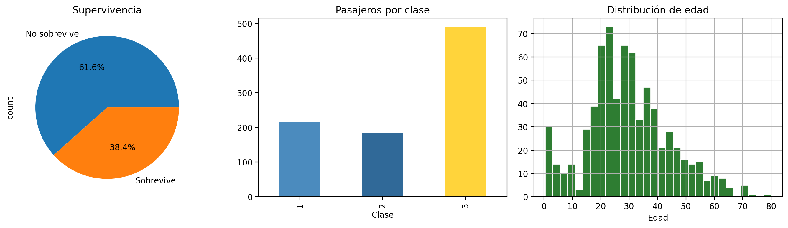

!pip install -q langchain langchain-openai langchain-community pandas matplotlib seaborn python-dotenvHPD 2 — Agente analítico con Tool Calling

Duración: 4h
Competencias: CE-2
Parte 1 — Setup
Empezamos instalando las dependencias necesarias y configurando el LLM.
import os
from dotenv import load_dotenv
load_dotenv()
os.environ["TOKENIZERS_PARALLELISM"] = "false"
import warnings
warnings.filterwarnings("ignore")
import pandas as pd
import matplotlib.pyplot as plt
import seaborn as sns
import io
import base64
plt.rcParams["figure.dpi"] = 100
print("Librerías cargadas correctamente.")Librerías cargadas correctamente.from langchain_openai import ChatOpenAI
LLM_KEY = os.getenv("LLM_API_KEY")
LLM_URL = "https://llamus.cs.us.es/api/v1"
if not LLM_KEY:
print("⚠️ Crea un archivo .env en la raíz con:\n LLM_API_KEY=tu_api_key\n Las celdas con LLM mostrarán este aviso.")
else:
llm = ChatOpenAI(model="gemma4:e2b-mlx", base_url=LLM_URL, api_key=LLM_KEY, temperature=0)
print("✅ LLM configurado.")✅ LLM configurado.Parte 2 — Dataset: Titanic
Cargamos el dataset del Titanic para que el agente tenga datos reales que analizar.
df = sns.load_dataset("titanic")
print(f"Dataset Titanic: {df.shape[0]} filas × {df.shape[1]} columnas")
print(f"Columnas: {list(df.columns)}")
print()
# Breve exploración
print("--- Primeras filas ---")
display(df.head())
print("\n--- Tipos de datos ---")
display(df.dtypes)
print(f"\n--- Valores nulos ---")
for col in df.columns:
nulos = df[col].isnull().sum()
if nulos > 0:
print(f" {col}: {nulos} nulos ({nulos/len(df)*100:.1f}%)")
print(f"\nSupervivientes: {df['survived'].sum()} de {len(df)} ({df['survived'].mean()*100:.1f}%)")Dataset Titanic: 891 filas × 15 columnas
Columnas: ['survived', 'pclass', 'sex', 'age', 'sibsp', 'parch', 'fare', 'embarked', 'class', 'who', 'adult_male', 'deck', 'embark_town', 'alive', 'alone']
--- Primeras filas ---| survived | pclass | sex | age | sibsp | parch | fare | embarked | class | who | adult_male | deck | embark_town | alive | alone | |
|---|---|---|---|---|---|---|---|---|---|---|---|---|---|---|---|
| 0 | 0 | 3 | male | 22.0 | 1 | 0 | 7.2500 | S | Third | man | True | NaN | Southampton | no | False |
| 1 | 1 | 1 | female | 38.0 | 1 | 0 | 71.2833 | C | First | woman | False | C | Cherbourg | yes | False |
| 2 | 1 | 3 | female | 26.0 | 0 | 0 | 7.9250 | S | Third | woman | False | NaN | Southampton | yes | True |
| 3 | 1 | 1 | female | 35.0 | 1 | 0 | 53.1000 | S | First | woman | False | C | Southampton | yes | False |
| 4 | 0 | 3 | male | 35.0 | 0 | 0 | 8.0500 | S | Third | man | True | NaN | Southampton | no | True |
--- Tipos de datos ---survived int64
pclass int64
sex object
age float64
sibsp int64
parch int64
fare float64
embarked object
class category
who object
adult_male bool
deck category
embark_town object
alive object
alone bool
dtype: object
--- Valores nulos ---
age: 177 nulos (19.9%)
embarked: 2 nulos (0.2%)
deck: 688 nulos (77.2%)
embark_town: 2 nulos (0.2%)
Supervivientes: 342 de 891 (38.4%)# Visualización rápida de referencia para usar más tarde
fig, axes = plt.subplots(1, 3, figsize=(14, 4))
df["survived"].value_counts().plot.pie(autopct="%1.1f%%", labels=["No sobrevive", "Sobrevive"], ax=axes[0])
axes[0].set_title("Supervivencia")
df["pclass"].value_counts().sort_index().plot.bar(ax=axes[1], color=["#4B8BBE", "#306998", "#FFD43B"])
axes[1].set_title("Pasajeros por clase")
axes[1].set_xlabel("Clase")
df["age"].dropna().hist(bins=30, ax=axes[2], color="#2e7d32", edgecolor="white")
axes[2].set_title("Distribución de edad")
axes[2].set_xlabel("Edad")
plt.tight_layout()
plt.show()
Parte 3 — Herramientas del agente
Tool 1: consulta_pandas
Permite al LLM ejecutar expresiones de pandas sobre el DataFrame.
from langchain.tools import tool
# ─── COMPLETAR: implementa la herramienta consulta_pandas ───
@tool
def consulta_pandas(expresion: str) -> str:
"""
Ejecuta una expresión de pandas sobre el DataFrame df del Titanic y devuelve el resultado.
El DataFrame 'df' tiene las columnas:
survived (0=no, 1=sí), pclass (1,2,3), sex, age, sibsp, parch, fare, embarked (C,Q,S),
class, who, adult_male, deck, embark_town, alive, alone.
Args:
expresion: expresión Python usando 'df' (ej: "df['age'].mean()",
"df.groupby('sex')['survived'].mean()")
Returns:
Resultado de la consulta como string.
Ejemplo: consulta_pandas("df['fare'].max()") → '512.3292'
"""
# TODO: Implementar eval seguro con sandbox limitado
# Pista: usa eval(expresion, {"df": df, "pd": pd, "__builtins__": {}})
# Captura excepciones con try/except y devuelve el error como string
resultado = None # ← completar
return str(resultado)# Probar la herramienta directamente (sin LLM)
# Si la implementaste, estas líneas deberían funcionar:
print("=== Probando consulta_pandas (sin LLM) ===")
print("1. Media de edad:")
# print(consulta_pandas.invoke({"expresion": "df['age'].mean()"}))
print("2. Supervivencia por sexo:")
# print(consulta_pandas.invoke({"expresion": "df.groupby('sex')['survived'].mean()"}))
print("3. Pasajeros por clase:")
# print(consulta_pandas.invoke({"expresion": "df['pclass'].value_counts().sort_index()"}))
print("\n⚠️ Descomenta las líneas anteriores cuando hayas implementado la tool.")=== Probando consulta_pandas (sin LLM) ===
1. Media de edad:
2. Supervivencia por sexo:
3. Pasajeros por clase:
⚠️ Descomenta las líneas anteriores cuando hayas implementado la tool.Tools de visualización
Permiten al LLM generar gráficos con matplotlib sobre los datos del Titanic.
# ─── COMPLETAR: implementa las herramientas de visualización ───
@tool
def histograma(columna: str, titulo: str = "") -> str:
"""Genera un histograma de una columna numérica del Titanic (Age, Fare...)."""
# TODO: df[columna].hist() + plt.title(titulo)
# Pista: guardar con plt.savefig("grafico.png") y cerrar con plt.close()
pass # ← completar
@tool
def barras(columna: str, agrupar_por: str = "") -> str:
"""Genera un gráfico de barras.
agrupar_por es opcional (Sex, Pclass...) para agrupar la media."""
# TODO: value_counts().plot.bar() o groupby().mean().plot.bar()
pass # ← completar
@tool
def boxplot(columna: str, agrupar_por: str = "") -> str:
"""Genera un boxplot de una columna numérica.
agrupar_por es opcional para comparar entre categorías."""
# TODO: df.boxplot(columna) o df.boxplot(columna, by=agrupar_por)
pass # ← completar# Probar las herramientas directamente (sin LLM)
print("=== Probando herramientas de visualización (sin LLM) ===")
# print(histograma.invoke({"columna": "Age", "titulo": "Distribución de edades"}))
# print(barras.invoke({"columna": "Fare", "agrupar_por": "Pclass"}))
# print(boxplot.invoke({"columna": "Age", "agrupar_por": "Sex"}))
print("⚠️ Descomenta las líneas anteriores cuando hayas implementado las tools.")=== Probando herramientas de visualización (sin LLM) ===
⚠️ Descomenta las líneas anteriores cuando hayas implementado las tools.Tool libre: código matplotlib arbitrario
Las 3 tools anteriores cubren los casos más comunes. Para gráficos más complejos (dispersión, heatmap, 3D…), esta tool ejecuta código matplotlib libre:
from io import BytesIO
@tool
def codigo_libre(codigo: str) -> str:
"""
Ejecuta código matplotlib libre sobre el DataFrame df del Titanic.
Úsalo cuando ninguna otra tool sirva (dispersión, heatmap, 3D...).
Args:
codigo: código matplotlib. Variables: df, plt, pd, np.
REGLAS (léelas):
- Usa SIEMPRE plt.<funcion>(), NUNCA df.plot() ni seaborn
- NO uses plt.show()
- NO intentes leer archivos (df ya está cargado)
- NO importes librerías (plt, pd, np ya disponibles)
Ejemplo que FUNCIONA:
plt.scatter(df['Age'], df['Fare'], c=df['Survived'], cmap='viridis', alpha=0.5)
plt.colorbar(label='Supervivencia')
plt.xlabel('Edad'); plt.ylabel('Tarifa')
"""
codigo = codigo.replace("plt.show()", "")
try:
plt.figure()
exec(codigo, {"plt": plt, "pd": pd, "df": df, "np": np})
buf = BytesIO()
plt.savefig(buf, format="png", bbox_inches="tight")
buf.seek(0)
plt.close()
return f"Gráfico generado ({len(buf.getvalue())} bytes)"
except Exception as e:
plt.close()
return f"Error: {e}. Reintenta con plt.<funcion>() en vez de df.plot() o seaborn"
# Probar codigo_libre
print("=== Probando codigo_libre (sin LLM) ===")
resultado = codigo_libre.invoke({
"codigo": "plt.hist(df['Age'].dropna(), bins=20, color='skyblue', edgecolor='black')\\nplt.title('Distribución de Edades')\\nplt.xlabel('Edad'); plt.ylabel('Frecuencia')"
})
print(f" {resultado}")=== Probando codigo_libre (sin LLM) ===
Error: name 'np' is not defined. Reintenta con plt.<funcion>() en vez de df.plot() o seaborn
TipDos niveles de visualización
Nivel básico: histograma, barras y boxplot — parámetros simples, sin exec(). Fáciles de implementar y seguras.
Nivel avanzado: codigo_libre — usa exec() para permitir cualquier gráfico. Más potente, pero requiere entender exec() y BytesIO.
Parte 4 — Construir el agente ReAct
Prompt del agente
Definimos el system prompt que le dice al modelo su rol y cómo usar las herramientas.
# ─── COMPLETAR: escribe el system prompt del agente ───
# Debe indicar:
# - Rol: analista de datos del Titanic
# - Qué herramientas tiene disponibles
# - Cuándo usar cada una
# - Formato de respuesta (conciso, profesional, en español)
# - Que SIEMPRE use herramientas para responder preguntas sobre los datos
SYSTEM_PROMPT = """Eres un analista de datos experto en el dataset del Titanic.
# TODO: completar el resto del prompt
"""
print("System prompt configurado.")
print(f"System prompt actual ({len(SYSTEM_PROMPT)} caracteres):")
print(SYSTEM_PROMPT[:200] + "..." if len(SYSTEM_PROMPT) > 200 else SYSTEM_PROMPT)System prompt configurado.
System prompt actual (99 caracteres):
Eres un analista de datos experto en el dataset del Titanic.
# TODO: completar el resto del prompt
Crear el agente
from langchain.agents import create_agent
if not LLM_KEY:
print("⚠️ Configura LLM_API_KEY en .env para crear el agente.")
else:
# ─── COMPLETAR: crear el agente ───
tools = [consulta_pandas, histograma, barras, boxplot, codigo_libre]
# TODO: Crea el agente con create_agent:
# agente = create_agent(model=llm, tools=tools, system_prompt=SYSTEM_PROMPT)
# result = agente.invoke({"messages": [{"role": "user", "content": pregunta}]})
# print(result["messages"][-1].content)
agente = None # ← completar
if agente:
print("✅ Agente ReAct creado correctamente.")
else:
print("⚠️ Completa la creación del agente.")⚠️ Completa la creación del agente.Parte 5 — Batería de pruebas
Probamos el agente con preguntas de dificultad creciente. Observa cómo razona y qué herramientas elige.
preguntas_prueba = [
# Nivel 1: consulta simple → debería usar consulta_pandas
"¿Cuál es la edad media de los pasajeros del Titanic?",
# Nivel 2: agrupación → consulta_pandas
"¿Qué porcentaje de mujeres sobrevivió comparado con los hombres?",
# Nivel 3: visualización → histograma
"Genera un histograma de la distribución de tarifas (fare)",
# Nivel 4: barras + agrupar_por
"¿Cuál es la tarifa media por clase? Haz un gráfico de barras",
# Nivel 5: tool libre → codigo_libre
"Haz un diagrama de dispersión (scatter) de edad vs tarifa, coloreando por supervivencia"
]
if not LLM_KEY:
print("⚠️ Configura LLM_API_KEY en .env para ver al agente en acción.")
elif agente is None:
print("⚠️ Completa la creación del agente en la celda anterior.")
else:
for i, pregunta in enumerate(preguntas_prueba, 1):
print(f"\n{'='*70}")
print(f"PREGUNTA {i}: {pregunta}")
print('='*70)
try:
result = agente.invoke({"messages": [{"role": "user", "content": pregunta}]})
print(f"\nRESPUESTA FINAL: {result['messages'][-1].content}")
except Exception as e:
print(f"ERROR: {e}")⚠️ Completa la creación del agente en la celda anterior.Tabla de evaluación
Completa esta tabla con tus observaciones sobre cada pregunta:
┌────┬──────────────────────────────────┬─────────────────┬──────────┬─────────────────────────┐
│ # │ Pregunta │ Tool(s) usada │ ¿Correcto?│ Observaciones │
├────┼──────────────────────────────────┼─────────────────┼──────────┼─────────────────────────┤
│ 1 │ Edad media │ │ / 5 │ │
│ 2 │ Supervivencia por sexo │ │ / 5 │ │
│ 3 │ Histograma tarifas │ │ / 5 │ │
│ 4 │ Tarifa media por clase (barras) │ │ / 5 │ │
│ 5 │ Dispersión edad vs tarifa │ │ / 5 │ │
└────┴──────────────────────────────────┴─────────────────┴──────────┴─────────────────────────┘graph TD
subgraph "Agente ReAct — Titanic"
direction LR
A[Pregunta<br/>lenguaje natural] --> B[LLM<br/>Reasoning]
B --> C{¿Herramienta<br/>necesaria?}
C -->|Sí| D[Tool Calling]
D --> E[consulta_pandas<br/>análisis datos]
D --> F[histograma / barras / boxplot<br/>vis. simple]
D --> G[codigo_libre<br/>vis. avanzada]
E --> H[Observación<br/>resultado numérico]
F --> H
G --> H
H --> B
C -->|No| I[Respuesta final<br/>en lenguaje natural]
end
style A fill:#4B8BBE,color:#fff
style B fill:#306998,color:#fff
style E fill:#e65100,color:#fff
style F fill:#FFD43B,color:#000
style I fill:#2e7d32,color:#fff
Tip¿Siempre necesitas un agente?
No. Si tu flujo de trabajo es fijo (siempre los mismos pasos, mismo orden), una cadena LCEL simple es más rápida, más barata y más predecible. Usa un agente solo cuando el LLM necesite decidir qué herramienta usar en tiempo real. En producción, cada llamada extra al LLM cuesta tokens y añade latencia. La regla: empieza con una cadena simple. Si no basta, añade un agente.